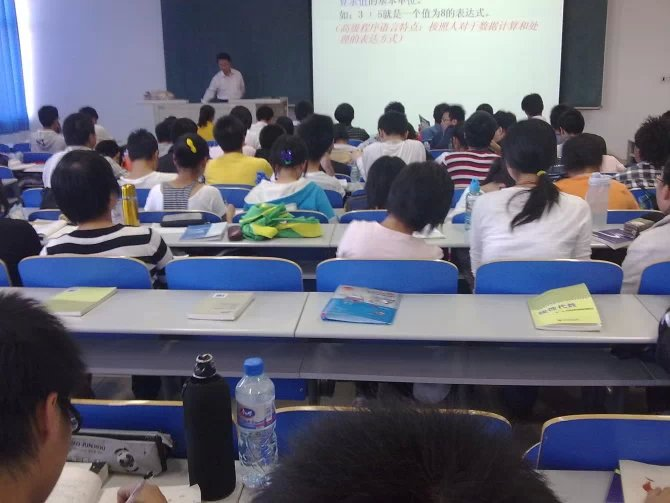
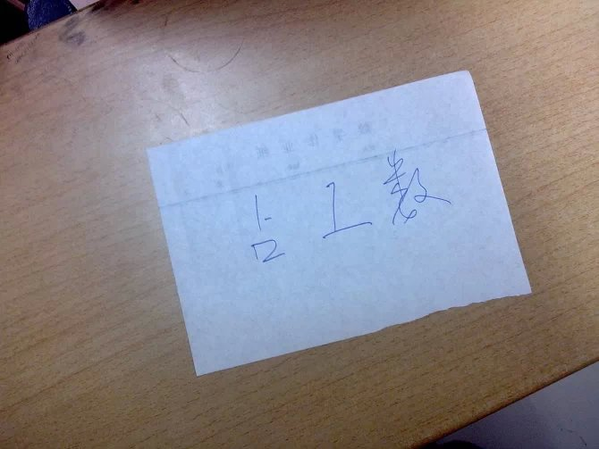
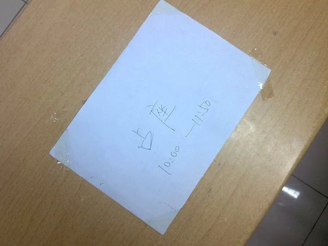
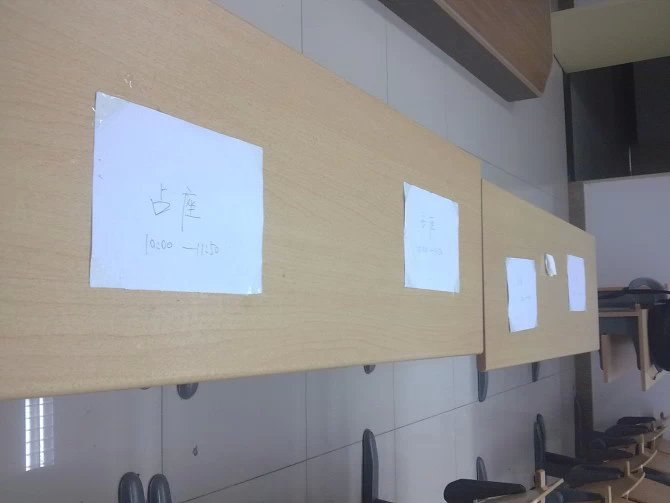
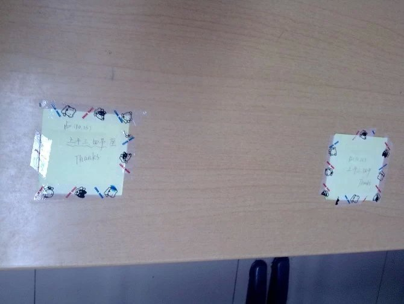

大学生活才开始一个月，就没有想到我竟遇到这样的事——这是一个疯狂的时代，占座都这么疯狂……
前天，晚自习的时候，我跑到了我很少去的一个五楼的教室。在这之前，我以为只有那种简单的占座方式，比如：比别人早去一到两个小时，把别人的上一节的课给上喽。我就曾经干过这样的事，不过那是因为我“有进取心”，想早去一次，结果就看到有人上课，我就毫不犹豫的坐下来开始听课，最后才知道那是别人的课……不过，那是刚开始，而且我们的课和前面的课正好一样，于是，我就把后一节给翘了……
不过，接下来，我们寝室那位占座达人就不再早去了，只是提前把书放在教室里的有利地势上，而后有事就可以离开了。这仍是比较老的方法，后来经过一个星期左右的进化，他就赶在提前一天把书放上去，比如，今天晚上去放书，占了明天上午的课，上午放学去放书占下午的课……

其实，如果那天我没有去五楼自习，我也不会明白，我们都小了……
原来，有时候占座是不用书的…………
比如，是可以这样的：




我对他们保有无言的崇拜…………
我其实并没有这种无语的习惯，于是喜欢低调的坐在靠后的位置，我想如果不会影响自己的学习，我想不会刻意的去搞这种无聊的事情。说无聊，可能有的人会不爽，不过，我只是坦陈自己的观点，也从没有考虑过他们怎么想的。
何必去考虑那些人呢？我是我自己，我做我自己喜欢的就好。